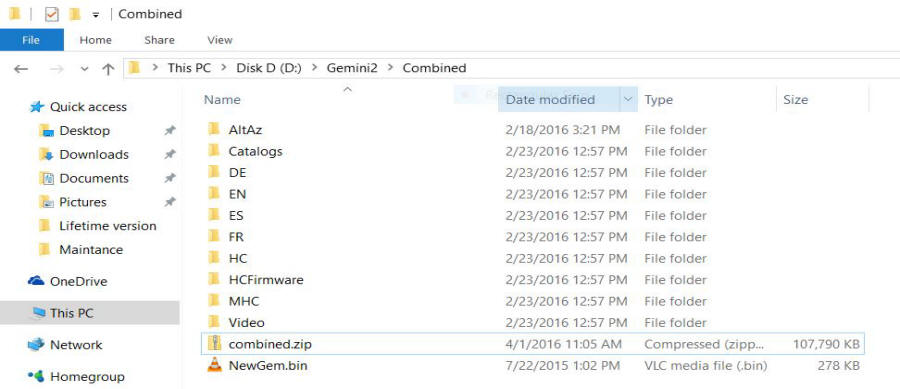
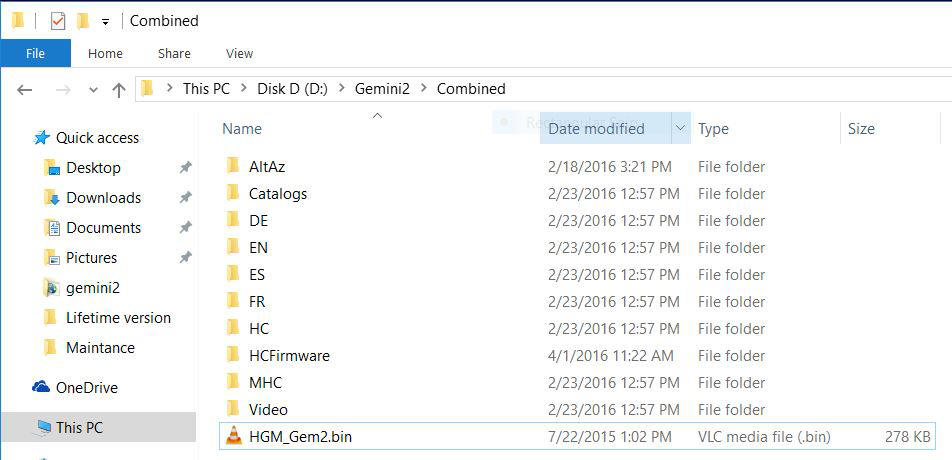

This guide will help you update the firmware in your Gemini 2 main control unit using a Mini SDCare Reader. You should only have to do this if something is wrong, or the version of firmware you have does not support the FTP method of updating the SDCard directory; or your Firmware version is dated Dec 13 2011 or older. This will also update the firmware in the handcontroller at the same time. If you intend to update the hand controllers micro-SDcard using a micro-Card Reader/Writer then some of the steps below will change. They will be indicated with a ## sign after the paragraph number and will have a paragraph number such a 4-#a.
Note: You do this at your own risk. No-one associated with this web site can be held responsible if something goes wrong. If you have to send you unit back for repair, you will bear all associated cost.
Please Remove the micro SDcard from the main unit using these instruction. Then come back here.
Since you are rebuilding the SDCard, I am going to suggest that you format the card. This will remove any file corruption on the SDCard. If the card is 2GB card you can use the default Windows format size. If the Card is 4GB you need to select FAT32 from the format size window. I suggest that you download and install SDFormatter. When you open this program after installing it, it should automatically show your mico-SDcard.
Also at this time Remove the hand controller and do not reconnect it until you are told to do so.
I also suggest you slide a business card under the battery clip of the battery.
Updating to the Latest Main Unit Firmware
There are only one file that you are going to have to be downloaded, extracted (unzipped) and written to the Mini SDCard.
1. Download the latest SD_card_date.zip Gemini Main Board Firmware image from http://gemini-2.net/firmware1/current/combined.zip
2. Save it on your computer. Remember the folder where you save it since you will need it later. I put mine on drive C: and named it Gemini2. I created a folders called Gemini on my desktop I am using Windows 10. I provide the latest files at Gemini-2 with a consistent file name of combined.zip This file contains all the files in the Gemini, that is normally needed to update the complete Gemini system.

Fig 1 Before it is unzipped
3. Please use a program such as 7-Zip. Please use the extract to here option, so other subdirectories are not created.
The final subdirectory should look like this, More: there are now many more subdirectories than what Fig 2 shows, Including DOC, PEC, MODELING and LOGS. This is normal.

Fig 2. and after it is unzipped.
4. In figure 2 above please delete or move the file Combined.zip. You can also move if to another directory if you wish.
4#a. If you intend to update the hand controller micro-SDcard using a micro-card reader/writer, then in the HCFirmware directory in Fig 2 above, you will find many files. You will need to delete all these files, or move them to another location on your hard drive. If you do not, the Gemini-2 will try to update the hand controller once it is connected.
ALSO IF your hand controller is already updated, then please delete all the files in the HCFirmware directory.
5. Now rename the NewGem.bin File to HGM_Gem2.bin The Gemini-2 will perform an automatic flash when Powered on. This is necessary because the really old firmware cannot Flash NewGem.bin from the web interface.
6. Now copy the complete file structure from the Gemini directory (if that is what you used) onto the micro_SDcard. You should have a similar directory to Fig 4 below.

Fig 4
7. Put the Micro_SDcard back into the Gemini-2. Please disconnect the Hand controller before powering the Gemini-2 back on if you already have not done so. Also remove the business card from under the battery clip.
8. Now you need to Power up the Gemini-2 without the Hand controller connected, but use the web interface to access the "mount" page of the Gemini-2 to check if you have the new firmware date. (see connecting to Ethernet port if you need instructions )
9. When you powerd on the Gemini-2, the HGM_Gem.bin file should have automatically flashed the firmware. You should have the latest in the Gemini-2 now. When this is done, the HGM_Gem.bin file will be renamed to Cur_Gem2.bin.
NOTE: If you deleted the the files in the HCFIRMWARE Directory in step 4#a above, skip step 10 but go to updating the handcontroller using a micro SDcard reader if you are going to update it.
10. Now plug in the Hand controller. Power the Gemini-2 back on. After the initial screen, the Hand controller should tell you that it is updating firmware, then go into the Flashing firmware message. This takes about 5 to over 30 minutes if you are doing a complete update of the hand controller. If everything is good, you will see a new screen offering 3 selections. They are "Polar Align Assist", "Assistance in building a model", and "Tour a catalog". You can use any of these, or use the back button to get to the observation/setup screen. On the Setup -->Mount, you can change the default boot method if you desire, from "cold start" to "ask if possible" (just a suggestion)
11. You should be done. Note: the pictures above shows a Jul 22, 2015 main unit firmware date. It is totally possible that a newer version has just been posted since I wrote these instructions.